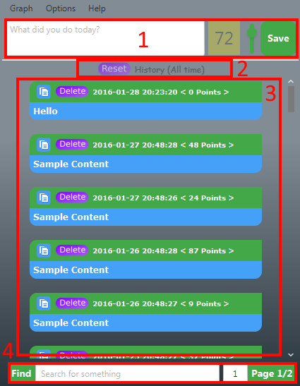
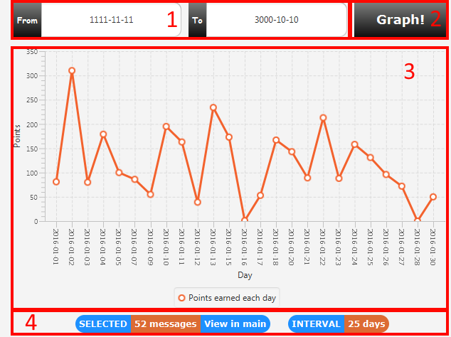

Description
This application allows you to post your daily activities and rate them with points of "use". How much has this activity been useful for you?
Also, you can create a graph of your use in a specific period of time
Main Window

- Area destinated for writing, rating and adding a new message
- Current messages label. Shows the criteria of the message selecting.
The default is : "All time", showing all the messages stored. "Reset" button
resets all the possible selections to the default one (All time)
- The main container where all the selected messages are shown. Messages longer
than one row will be minimized and can be toggled by clicking on them
- The search bar that allows to dynamically view the search result. Also contains the page select area (the default number of messages per page can be changed in Options
Graphing Window

- From and To periods of selecting. MUST be in format "yyyy-mm-dd"
- Button that triggers graph creating
- The graph itself, on the Y Axis there are Points and on the X
Axis there are unique dates. The program collects all the messages from the same
dates and adds them together
- Shows the number of selected messages and the amount of ACTIVE days. Allows to SHOW them in the main window.
After clicking this, return to the main window to see the results.